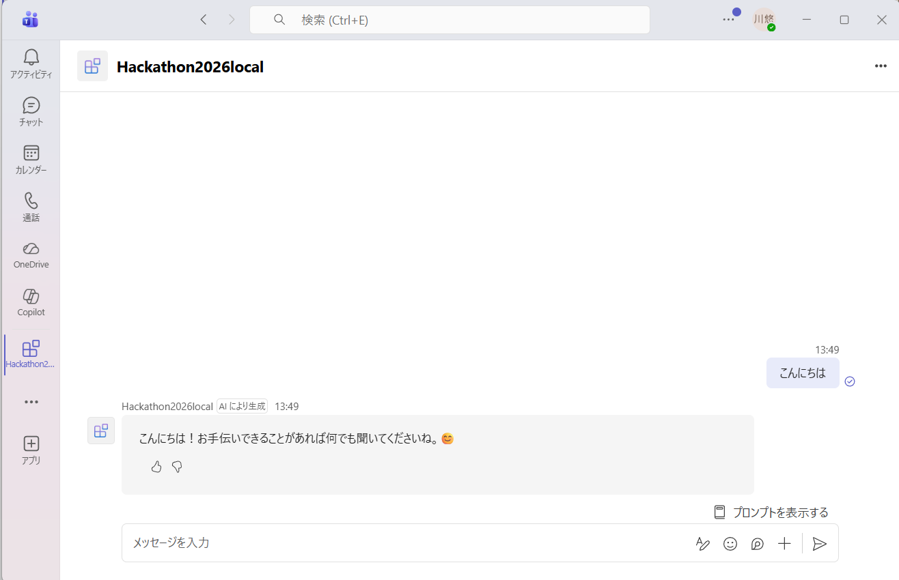

環境構築ガイド — Teams AIエージェント開発スタートアップ
TeamsのボットをテストするためのMicrosoft 365テナント（組織環境）を用意します。個人のTeamsアカウントではボット開発に必要な機能が制限されるため、Business/Enterpriseプランが必要です。
microsoft.com/ja-jp/microsoft-365/business にアクセスyourname.onmicrosoft.com）作成後、admin.microsoft.com（Microsoft 365 管理センター）にログインできればOKです。
作成したテナントでTeamsが使えることを確認します。後でボットをこのTeams環境に追加します。
teams.cloud.microsoft にアクセスadmin@yourname.onmicrosoft.com）Azure OpenAIやボットのバックエンドをホストするためのAzureアカウントを用意します。M365とAzureは別サービスのため、別途登録が必要です。
portal.azure.com にアクセスAzureポータルのホーム画面（クイックスタートセンター）が表示されればOKです。
Azure AI Foundryは、OpenAIモデルを含むAIサービスを一元管理するプラットフォームです。GPT-4oなどのモデルをデプロイして、アプリから呼び出せるようにします。
サブスクリプション: （自分のサブスクリプションを選択） リソースグループ: 「新規作成」→ 任意の名前（例: hackathon-rg） 名前: 任意の名前（例: hackathon-foundry）※グローバルで一意な名前 リージョン: Japan East（日本から使う場合はここが最速） Default project name: 任意（例: proj-default）
概要ページで「状態：Succeeded」と表示されればリソース作成完了です。
リソースを作っただけではモデルは使えません。使いたいモデル（GPT-4o）を「デプロイ」することで、APIから呼び出せるようになります。
デプロイ名: gpt-4o（デフォルトのままでOK） モデル版: 2024-05-13（最新の安定版） 展開の種類: Standard
gpt-4o）のままにしておくと管理が楽です。デプロイ一覧で「プロビジョニングの状態：成功」と表示されればOKです。
コードからAzure OpenAIを呼び出すために必要な「エンドポイントURL」と「APIキー」を取得します。
① キー1（または キー2） ← 秘密にすること！GitHubに上げない！ ② 言語 API エンドポイント ← https://[リソース名].openai.azure.com/
.gitignore でキーを含むファイルを除外する必要があります。Teamsアプリ開発に必要なツールをVS Codeに追加します。
以下がインストール済みであることを確認してください：
python --version # Python 3.12.x または 3.13.x が表示されればOK node --version # v18.x.x 以上が表示されればOK
Ctrl+Shift+X）Toolkit付属のテンプレートから、Teams上で動くAIエージェントの雛形コードを自動生成します。
① カテゴリ: Teams エージェントとアプリ ② 種類: 一般的なTeamsエージェント ③ LLMサービス: Azure OpenAI ④ APIキー: Enterでスキップ（後で設定） ⑤ 言語: Python ⑥ 保存先: 任意のフォルダ
プロジェクトフォルダが自動で生成され、VS Codeで開かれます。
appPackage/ — Teamsアプリのマニフェストenv/ — 環境変数ファイル群src/ — ボットの本体コードinfra/ — Azureデプロイ用インフラ定義
STEP 6で取得したAPIキーとエンドポイントをプロジェクトに設定し、必要なPythonライブラリをインストールします。
プロジェクト内の env/.env.local.user をVS Codeで開き、以下を編集します：
SECRET_AZURE_OPENAI_API_KEY=（STEP6でコピーしたキーを貼り付け） AZURE_OPENAI_ENDPOINT='https://[リソース名].openai.azure.com/' AZURE_OPENAI_DEPLOYMENT_NAME='gpt-4o'
.gitignore で除外されているため、Gitにコミットされません。チームで共有する場合はセキュアな方法（Azure Key Vault等）を使ってください。VS Codeのターミナルを開き（Ctrl+`）、プロジェクトフォルダで以下を実行します：
python -m pip install -r src/requirements.txt
エラーが出なければインストール完了です。
環境変数の設定とライブラリのインストールが完了したら、F5キーを押してデバッグを開始します。Toolkitが自動でTeams環境と接続し、ブラウザ上のTeamsでボットが起動します。
F5キーでボットをローカル起動し、Microsoft 365 Agents Playgroundを使ってTeams上の動作をシミュレートします。Azureへのデプロイ前にコードを素早く検証できます。
F5起動時に ModuleNotFoundError: No module named 'azure' が表示される場合、デバッガーが使用するPythonインタープリターと、ライブラリをインストールしたPython環境が異なることが原因です。
ターミナルのエラーメッセージに表示されているPythonのフルパスを使って、再度インストールします：
# エラーメッセージ内のPythonパスを使ってインストール（例） & 'C:\Users\[ユーザー名]\AppData\Local\Programs\Python\Python313\python.exe' -m pip install -r src/requirements.txt
Ctrl+Shift+P → 「Python: インタープリターを選択」で確認・変更できます。F5を複数回押すと OSError: [WinError 10048]（ポート3978が既に使用中）というエラーが発生します。
デバッグツールバーの ■（停止）ボタン を押してすべてのデバッグセッションを終了してから、再度F5を押してください。
F5キーを押す（または「実行」→「デバッグの開始」）Playgroundの右側「Log Panel」に Connected. と表示され、チャットでメッセージを送ると返答が返ってくればローカル動作確認完了です。
Toolkitを使って本物のTeamsにボットをデプロイするには、テナントでカスタムアプリのアップロードが許可されている必要があります。デフォルトでは無効のため、Teams管理センターで設定を変更します。
admin.teams.microsoft.com にアクセスVS CodeのM365 Agents ToolkitパネルのACCOUNTSセクションで「Custom App Upload Enabled」と表示されれば設定完了です。
ローカルで動作確認できたボットを、本物のTeams環境で使えるようにAzureにデプロイします。ToolkitのLIFECYCLE機能を使うと、Azure Bot Serviceの登録やApp Serviceへのデプロイが自動で行われます。
Azureにリソースを作成し、ボットを登録します。
env/.env.dev にBOT_IDなどの値が自動で書き込まれます。ローカルのコードをAzureのApp Serviceにアップロードします。
配置ステージ 2/2 アクションが正常に実行されました。
上記メッセージが表示されればデプロイ成功です。
appPackage/build/ フォルダ内に生成されています本物のTeamsでボットとチャットできることを確認したら、次は以下の機能追加に進みます：
AzureへのProvisionがApp Serviceのクォータ制限で失敗する場合でも、Dev Tunnelという機能を使えばローカルで動作するボットを本物のTeamsに接続できます。ボットはPCで起動し続けている必要がありますが、開発・テスト用途には十分です。
Provisionを実行すると arm.MissingEnvironmentVariablesError が出る場合があります。Azureデプロイ用の環境変数ファイル（env/.env.dev.user）が空のためです。
env/.env.local.user と同じ内容を env/.env.dev.user にも設定してください：
SECRET_AZURE_OPENAI_API_KEY=（Azure OpenAIのAPIキー） AZURE_OPENAI_ENDPOINT='https://（your-resource）.openai.azure.com/' AZURE_OPENAI_DEPLOYMENT_NAME='gpt-4o'
新規サブスクリプションでは、App Service Plan（F1/B1/S1など全プラン）のVM クォータが 0 に設定されており、armDeploy.DeployArmError が発生します。Azure ポータルのクォータページ（App Service Public Preview）でも申請ボタンがグレーアウトされており、現時点での申請は不可能です。
Teamsのチャット画面でボットにメッセージを送り、GPT-4oによる返答が返ってくることを確認します。

「AI により生成」と表示され、GPT-4oの返答が届いていれば成功です。